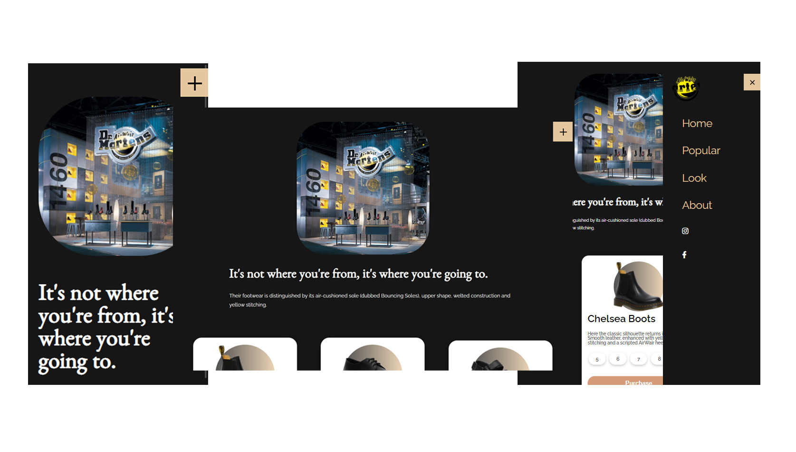
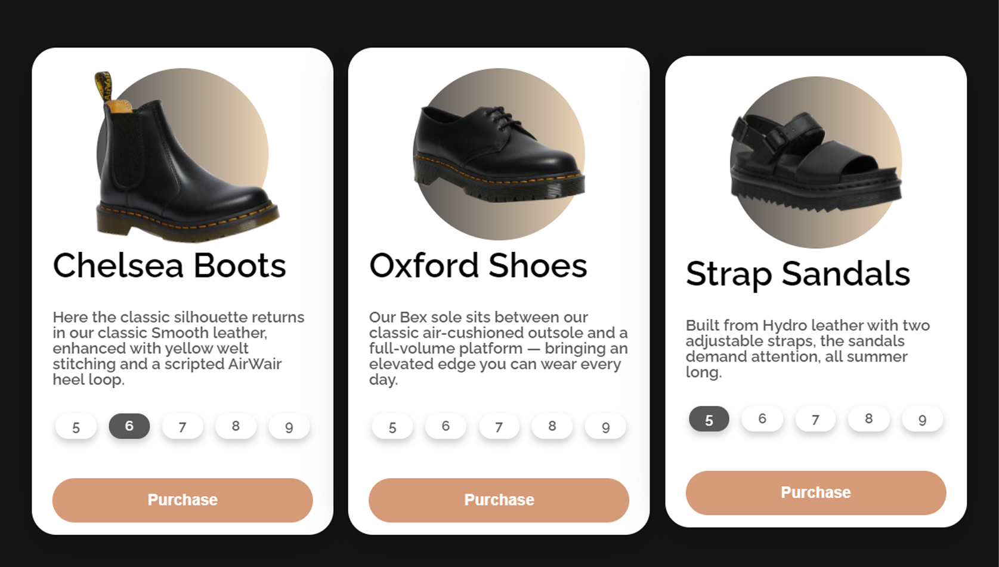
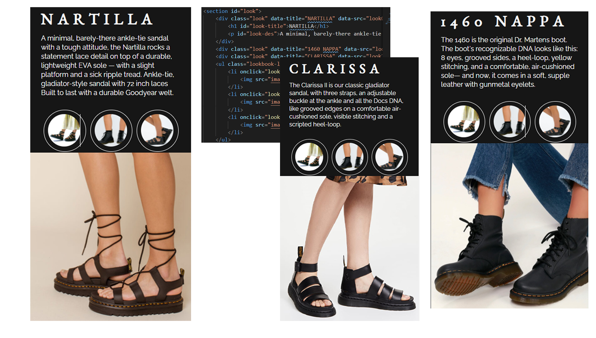

Shoe Shop
OVERVIEW
This project is to create a single-page website with features I hadn't done in the class before in a responsive web design. On this page, You’ll see the brand’s value, popular items, look book matching to the items on the thumbnail list. I wanted the theme which was tough, wild, unique, and free, in addition to that shoe brand. So I chose the leather boots brand. I planned each section with features to show my challenges. I tried to show dynamic features on this page.
Technical Info:
HTML, CSS, JavaScript, Adobe Illustrator,
PROCESS
01
Planning
Before I started the new project for my portfolio, I had a main item and theme initially. I wanted to do a shoe shop such as a sneakers shop. However, My primary theme color was black and dark charcoal grey and textures are wild and tough and some kind of unique and free. So I decided to go with dr martens’ brand image assets and content from their website. I used two types of fonts not to bore users to read the texts.
02
Code
After the sketches, I worked on writing the code for the website. To make the popular items section dynamic I mainly used CSS preserve 3d and transform. From 1200px breakpoint, hover effect fires. The images in each card get bigger and slightly tilted. For selecting shoe sizes, I used CSS and Javascript together. When one size is checked, it changes the color and other buttons are automatically unchecked. In the Look book section, I used data-attribute and javascript can grab the property. When users clicked the round image on the list, Title, Description, and the image change to match accordingly. Their layout is the same, only content is changing. so I passed a different parameter in the same function.
03
Reflection
The biggest challenge in this project was to apply my basic javascript skills to the features I planned. In the planning stage, I had an idea how to make it happen, but while working on code. It was harder than I thought It would be. So I watched the youtube videos and searched for other examples. And with lots of codes, keeping a clean code is also not easy. However, I used the new skills and I’m satisfied with my design and skills. It was a very fun challenge.
